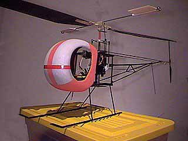
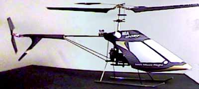
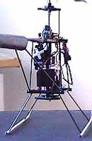
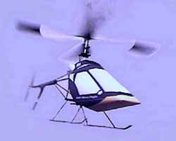
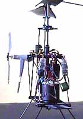

How can you not get excited about these heliocopters from Mario I. Arguello?
|
I worked on pictures of my chopper the Robin Slow Fly IR/RC (26.5" Diam Rotor at 4.0 OZ. total weight.). I initially started designing the Robin for a micro 4-channel RC system, but after talking to Sergio Zigras, he convinced me to try his infra red system so as it stands, the Robin SF IR/RC uses a 4-channel IR RX/TX custom built by Sergio Zigras for the Robin SF IR/RC. It can also be equipped with submicro RC equipment. The Robin SF IR/RC uses a single Hi Line Micro-4 motor, 3 of the new Hitec HS-50 servos and a home built speed control with BEC. All inexpensive components.
Keep the models coming! |
 |
He also has a S-280 powered model called the Mee-Kro 280. Check it's pictures!
Mario's latest 280 machine is getting flights over 12 minutes with Tadrian cells.
Here are a few pix of a helicopter Mario is building in limited production.
For more info, visit his web site, or Email him directly.

|    |
Copyright 1999, Thayer Syme. All rights reserved